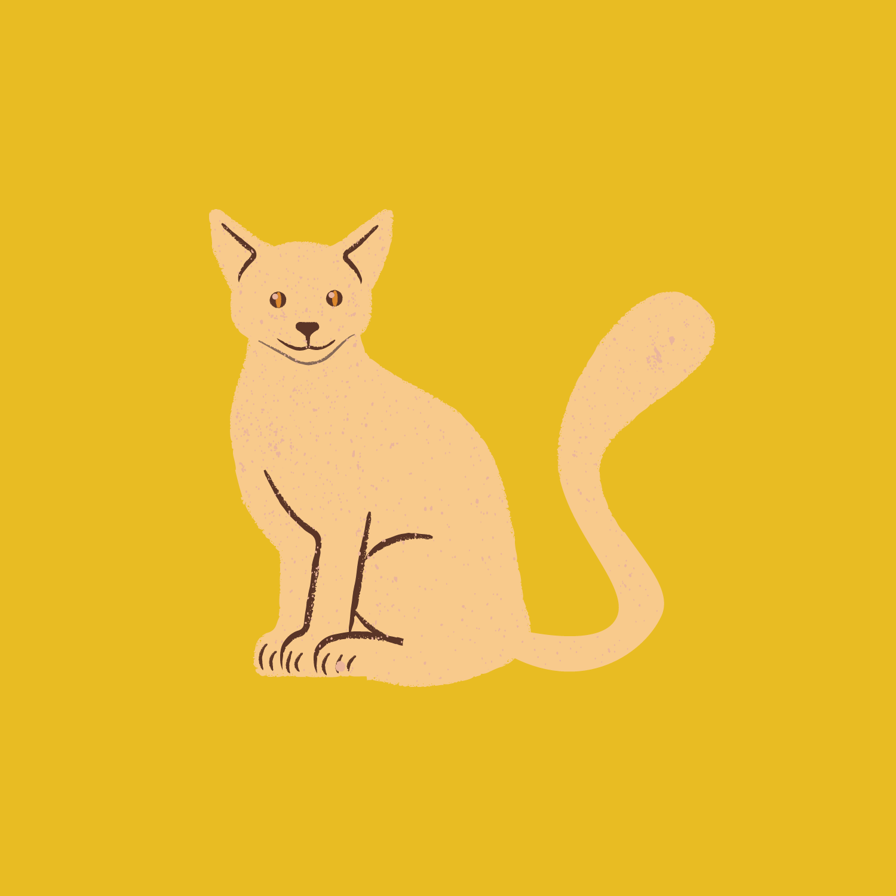
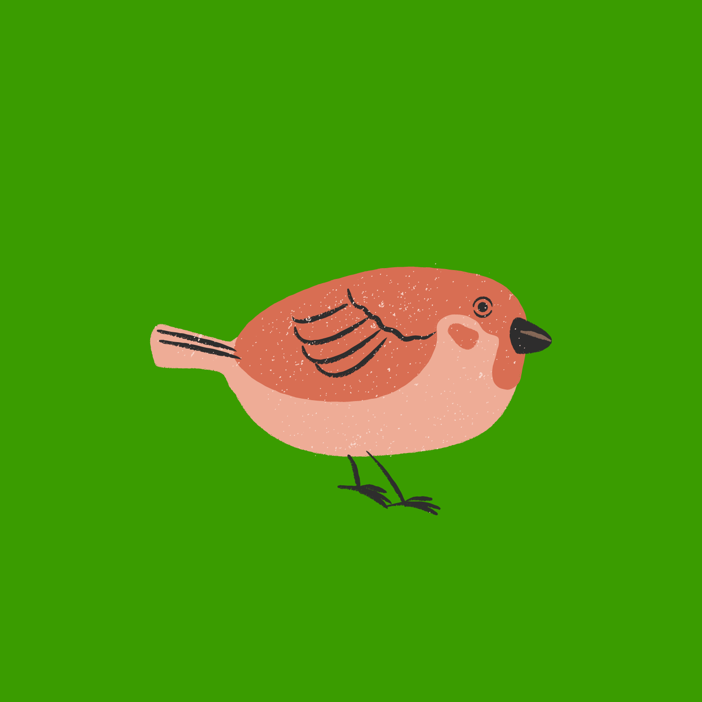

Cachorro
O cão, no Brasil também chamado de cachorro, é um mamífero carnívoro da família dos canídeos, subespécie do lobo, e talvez o mais antigo animal domesticado pelo ser humano
Detalhes

Gato
O gato, também conhecido como gato caseiro, gato urbano ou gato doméstico, é um mamífero carnívoro da família dos felídeos, muito popular como animal de estimação.
Detalhes

Pássaro
Aves possuem personalidade variadas e você pode encontrar um pouco de tudo de acordo com a espécie escolhida. Alguns passarinhos amam cantar e assobiar. Outros são quietos e ainda tem aqueles que adoram falar.
Detalhes